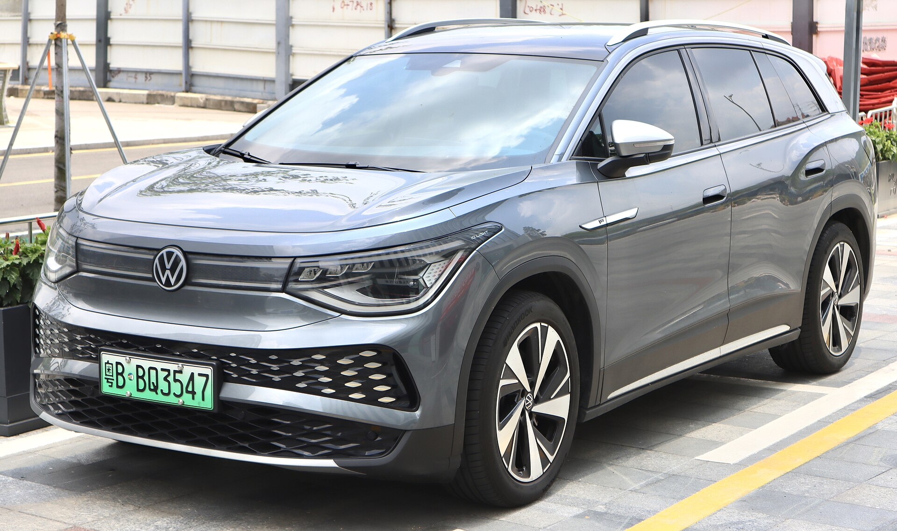

кузовні деталі
Перевіряємо артикул, комплектацію і доступність у Китаї перед погодженням замовлення.
Запчастини з Китаю під замовлення
Підбираємо оригінальні та OEM запчастини для Volkswagen ID по VIN, фото або назві деталі. Перевіряємо сумісність, пакування і варіанти доставки в Україну.
Для Volkswagen ID з Китаю важливо відрізняти ID.4 X, ID.4 Crozz, ID.6 X та ID.6 Crozz: схожі деталі можуть мати різні кріплення, оптику й артикули.
Перевіряємо артикул, комплектацію і доступність у Китаї перед погодженням замовлення.
Перевіряємо артикул, комплектацію і доступність у Китаї перед погодженням замовлення.
Перевіряємо артикул, комплектацію і доступність у Китаї перед погодженням замовлення.
Перевіряємо артикул, комплектацію і доступність у Китаї перед погодженням замовлення.
Перевіряємо артикул, комплектацію і доступність у Китаї перед погодженням замовлення.
електромобілі Volkswagen для китайського ринку, де важливо не змішувати європейські та китайські версії деталей. Тому одна й та сама назва деталі може мати кілька версій. Ми перевіряємо сумісність перед оплатою, щоб деталь підійшла з першого разу.

Працюємо з китайськими версіями Volkswagen ID, які часто відрізняються від європейських каталогів. Якщо вашої моделі немає в списку, все одно надішліть VIN — перевіримо можливість поставки з Китаю.
Модель, VIN за можливості, фото або назва деталі: фара, крило, бампер, скло, датчик.
Звіряємо артикул, комплектацію і доступні варіанти в Китаї.
Окремо пояснюємо авіа/море, строки, габарити і фінальну суму.
Супроводжуємо замовлення до отримання і даємо статуси на ключових етапах.
Можна, але для Volkswagen ID VIN сильно зменшує ризик помилки. Якщо VIN немає — надішліть фото, артикул або точну назву деталі.
Якщо доступні кілька варіантів, покажемо різницю по ціні, строку і доцільності. Для критичних вузлів частіше радимо оригінал.
Орієнтир: авіа приблизно від 14 днів, море приблизно від 60 днів. По великих кузовних деталях маршрут погоджується окремо.
Це нормально. Опишіть деталь простими словами: крило, бампер, скло, фара, датчик. Менеджер уточнить дані для підбору.